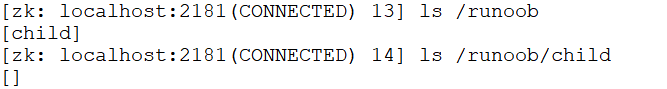
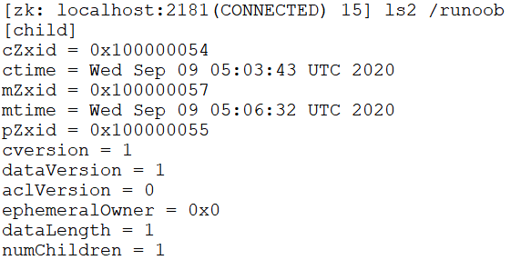
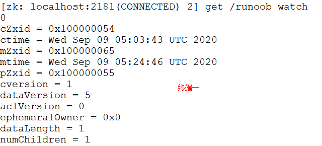
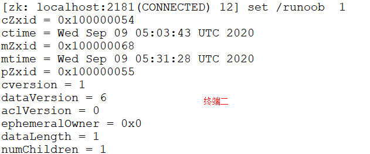
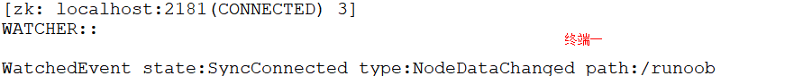
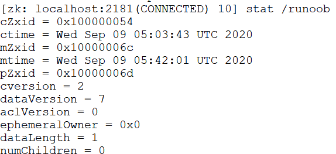
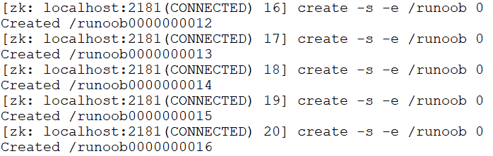
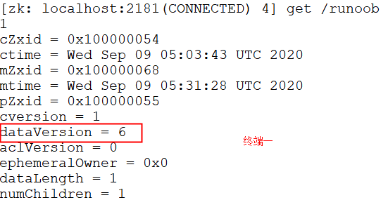
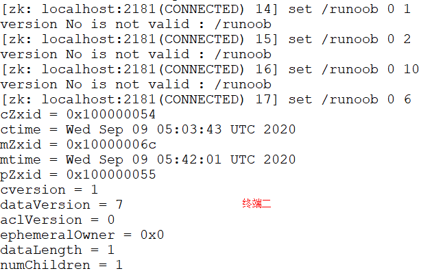
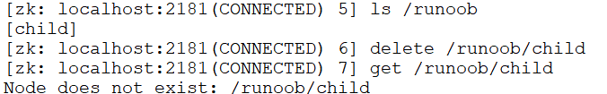

zookeeper 命令用于在 zookeeper 服务上执行操作。
首先执行命令，打开新的 session 会话，进入终端。
$ sh zkCli.sh
下面开始讲解基本常用命令使用，其中 acl 权限内容在后面章节详细阐述。
ls 命令
ls 命令用于查看某个路径下目录列表。
格式：
ls path
- path：代表路径。
$ ls /runoob

ls2 命令
ls2 命令用于查看某个路径下目录列表，它比 ls 命令列出更多的详细信息。
格式：
ls2 path
- path：代表路径。
$ ls2 /runoob

get 命令
get 命令用于获取节点数据和状态信息。
格式：
get path [watch]
- path：代表路径。
- [watch]：对节点进行事件监听。
以下实例查看同时开启两个终端。
终端一:
$ get /runoob watch

在终端二对此节点进行修改：
$ set /runoob 1

终端一自动显示 NodeDataChanged 事件：

stat 命令
stat 命令用于查看节点状态信息。
格式：
stat path [watch]
- path：代表路径。
- [watch]：对节点进行事件监听。
以下实例查看 /runoob 节点状态：
$ stat /runoob

create 命令
create 命令用于创建节点并赋值。
格式：
create [-s] [-e] path data acl
- [-s] [-e]：-s 和 -e 都是可选的，-s 代表顺序节点， -e 代表临时节点，注意其中 -s 和 -e 可以同时使用的，并且临时节点不能再创建子节点。
- path：指定要创建节点的路径，比如 /runoob。
- data：要在此节点存储的数据。
- acl：访问权限相关，默认是 world，相当于全世界都能访问。
以下实例添加临时顺序节点：
$ create -s -e /runoob 0

创建的节点既是有序，又是临时节点。
set 命令
set 命令用于修改节点存储的数据。
格式：
set path data [version]
- path：节点路径。
- data：需要存储的数据。
- [version]：可选项，版本号(可用作乐观锁)。
以下实例开启两个终端，也可以在同一终端操作：
$ get /runoob

下图可见，只有正确的版本号才能设置成功：
$ set /runoob 0 1 $ set /runoob 0 2 $ set /runoob 0 10 $ set /runoob 0 6

delete 命令
delete 命令用于删除某节点。
格式：
delete path [version]
- path：节点路径。
- [version]：可选项，版本号（同 set 命令）。
以下实例删除 /runoob 节点的子节点：
$ ls /runoob $ delete /runoob/child $ get /runoob/child


点我分享笔记